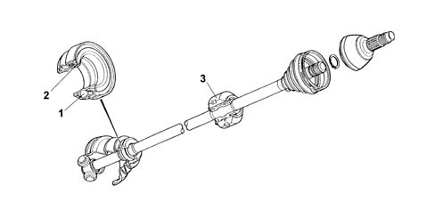
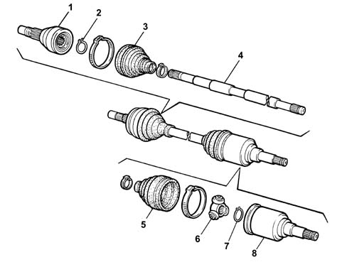

Introduction - AXLE
- Path
- Descriptions > 27 AXLE > Introduction - AXLE
- Kind
- system description
- Applies to
- engines: 1.2 8v, 1.6 16v, 1.3 JTD 16V, 1.9 JTD 8V, 1.9 DIESEL; all production periods
- Interactive page
- https://sloeber94.github.io/elrnDB-fDbl/en/#/2585405
Applies to: engines: 1.2 8v, 1.6 16v, 1.3 JTD 16V, 1.9 JTD 8V, 1.9 DIESEL; all production periods
Drive shafts with constant velocity joints at the wheel end and tripod joints at the differential end make up a transmission assembly that transmits motion from the gearbox to the drive wheels.
Applies to: engines: 1.2 8v, 1.9 DIESEL; all production periods
DRIVESHAFTS
The power is transmitted through driveshafts with wheel side constant velocity joints and gearbox side three-lobe joints.
In order to keep oil leaks to a minimum, there are sealed ball bearings (2) on the gearbox side boots, fitted on the actual driveshafts.
There is a seal (2) which is an integral part of the bearing (1).
The bearing and gaiter are replaced as one unit during service.
The right drive shaft comes with a hot press-fitted vibration damping mass that must never be removed. It is advisable to check that the position is correct at intervals and replace the whole drive shaft if necessary.

1, Sealed bearing
2, Gasket
3, Damper mass
Applies to: engines: 1.9 JTD 8V; all production periods
DRIVESHAFTS
The transmission is the type with wheel and gearbox side constant velocity joints.
An intermediate shaft transmits the power to the right driveshaft which is the same as the left.
This solution makes it possible to achieve a perfectly symmetrical distribution of the drive torque at both wheels. This avoids the bending curvature of the longer driveshaft, due to the drive torque transmitted which could cause variations in the vehicle dynamic geometry.

1, Wheel side constant velocity joint
2, Constant velocity joint circlip
3, Protective boot
3, Driveshaft
5, Protective boot
6, Three-lobe joint
7, Three-lobe joint circlip
8, Gearbox side coupling.